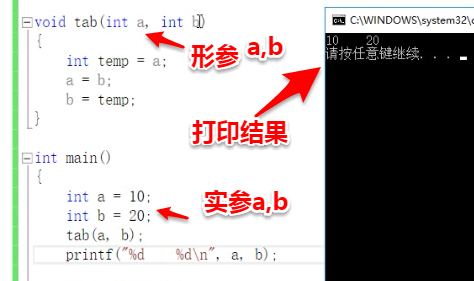

指针和参数
1、形参改变不了实参的值:图1
图1
2、通过地址传递可以改变实参的值：图2
 图
图注意：在图1与图2 在定义函数参数中 a,b前 星号 * 的有无 说明传递的是 实参的地址与实参的值
2、函数参数中如果有数组 都会转化为指针 sizeof(数据类型) 所以求出来的值不作为循环的值使用

打印结果

注意：数组作为函数参数可以退化为指针（图3）
在传递数组时需要加上数组的个数
 图3
图3
3、两种方式求出字符串长度 （图4）
①利用函数strlen（）；
②通过while循环遍历字符串直至遇到字符串结果\0结束，遍历中定义一个整型变量i,进行记录循环次数，同时也是字符串长度;
 图4
图44、指针作为返回值
①字符串数组 存放在栈区:图5
 图5
图5②字符串常量 会在程序运行时 放在常量区 不能被修改 可以读取 程序结束时会被销毁：图6
 图6
图6③保证指针地址对应的值是有内容的：图7
 图7
图75、strstr例子:
条件：①两个匹配的字符串，必须完全匹配，匹配个数 = 字符串长度
②如果匹配一个字符串，需要记录被匹配字符串地址
③如果匹配一半为成功 回到记录被匹配字符串地址+1
④如果匹配中的被匹配字符串的结束 匹配个数 不等于 字符串长度

6、指针和字符串
①*p改变字符串中的值

②字符串与指针在程序中打印的值：

③字符串常量 是一个常量的数组 可以读取字符和字符串 但是不能修改

④栈区

⑤常量区

7、指针小结

二级指针小结

注意：不是所有的二级之指针都能当作二维数组来操作
所有的二维数组都能当作二维指针来使用
8、字符串排序的三种实现方法：

循环优化
定义一个int类型 初始化为1；
在第二层循环的交换语句的开始 将定义的int类型的flag 赋值为零，开始内层循环结束，判断flag是否为零，如果为零直接return,
否则在外层循环再将flag赋值为1，再次进行内循环，直至执行flag判断的语句；